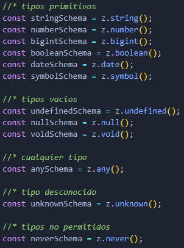
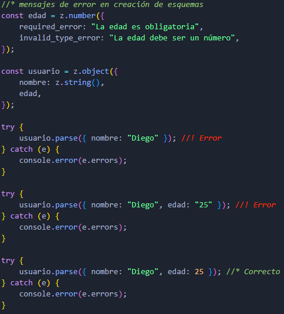

Zod
Zod es una biblioteca de validación de datos para JavaScript y TypeScript. Es simple, poderosa, y permite definir esquemas para validar datos de entrada y garantizar que cumplan con ciertas reglas o estructuras.
Características Principales:
- Definición de Esquemas:
- Puede definir la forma esperada de los datos con tipos y reglas de validación.
- Validación:
- Valida datos de manera simple con métodos como parse o safeParse.
- Integración con TypeScript:
- Genera automáticamente tipos TypeScript basados en los esquemas definidos.
- Encadenamiento de Métodos:
- Define reglas adicionales mediante métodos como min, max, regex, etc.
- Composición de Esquemas:
- Puede combinar esquemas para representar datos más complejos.
- Tipado seguro:
- Permite definir esquemas de validación de datos en TypeScript, lo que garantiza que los datos de entrada cumplan con las reglas definidas en el esquema.
- Sintaxis simple:
- La sintaxis de Zod es simple y fácil de entender, lo que facilita la definición de esquemas de validación de datos.
- Extensibilidad:
- Permite extender los esquemas de validación con reglas personalizadas, lo que brinda flexibilidad para adaptar la validación a las necesidades específicas de cada proyecto.
Uso básico
Definir y Validar un Esquema
- z.object():
- Define un esquema de objeto con las propiedades y reglas de validación especificadas.
- parse():
- Valida y transforma los datos de entrada según el esquema definido.
Validación Segura con safeParse
A diferencia de parse, el método safeParse no lanza excepciones. En su lugar, devuelve un objeto con el resultado.
- safeParse():
- Valida los datos de entrada y devuelve un resultado seguro que indica si la validación fue exitosa y los datos transformados, o los errores de validación.
Esquemas Personalizados
Es posible definir esquemas personalizados para validar tipos de datos específicos.
- refine():
- Define una regla de validación personalizada para un esquema.
Tipos de Esquemas
Tipos primitivos

Strings
Al utilizar métodos de validación, puede pasar un argumento adicional para proporcionar un mensaje de error personalizado.
Numbers
Las validaciones de los numbers tambien pueden tener un mensaje de error personalizado.
Se puede personalizar ciertos mensajes de error al crear un esquema numérico.

Objetos